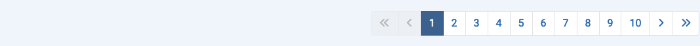

Objectif¶
La plupart des composants ont des vues en liste qui affichent des éléments provenant de la base de données. Il peut y avoir des centaines d'éléments, des milliers peut-être, voire des millions. La Limite de liste par défaut, c'est-à-dire le nombre d'éléments affichés sur une page de résultats, est généralement de 20. Au-dessous de chaque page de résultats, si le nombre de résultats dépasse la limite actuelle, vous trouverez une barre de Pagination :

Avec le premier numéro dans la barre de Pagination sélectionné, les 20 premiers résultats seront affichés dans la liste, ou quel que soit le nombre de résultats que la Limite de liste a été fixée. Sélectionnez le numéro suivant ou l'icône Suivant () pour passer à la page d'éléments suivante.
Le nombre maximum de pages affichées dans une seule barre de pagination est de 10. Cependant, les numéros de page inférieurs et supérieurs à la page actuelle sont affichés pour faciliter le passage d'une page à l'autre.
Voici une capture d'écran de la liste des Plugins après être passé à la page 10 avec une Limite de liste fixée à 5 :

Les Icônes
- Aller à la Première page.
- Aller à la page Précédente.
- Aller à la page Suivante.
- Aller à la Dernière page.
Sur la première page, les icônes de la Première page et de la page Précédente sont désactivées. Sur la dernière page, les icônes de la page Suivante et de la Dernière page sont désactivées.
Traduit par openai.com